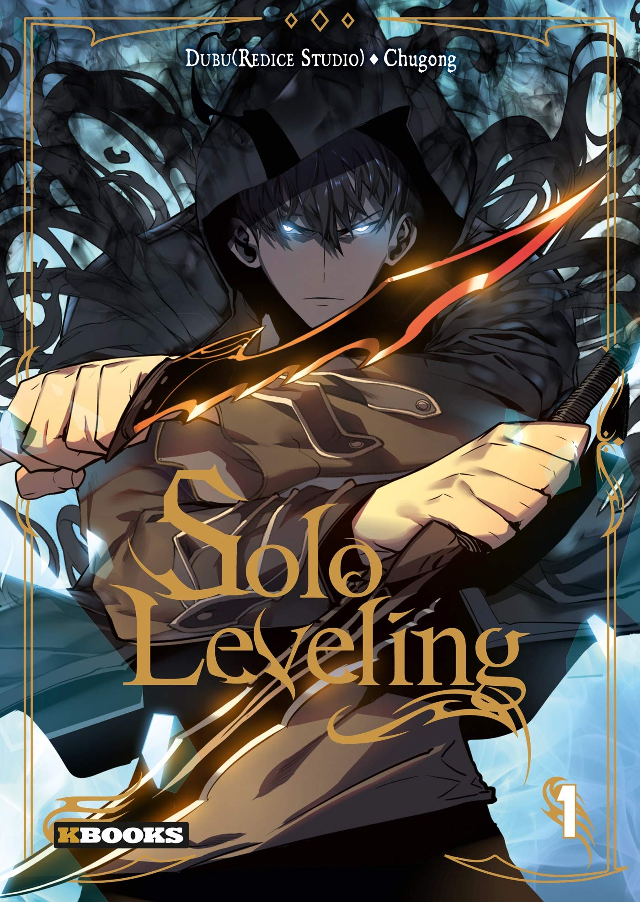

Kingdom©
The story of Kingdom is a fictional adaptation of the Chinese history period known as the Warring States period, which ended in 221 BC when Ying Zheng, king of Qin, succeeded in conquering the other states and unifying China.
Several of the characters are based on historical figures. Many times characters will take the names of people in history, and other times they will have completely different names.
Oftentimes this is a result of Japanese Kanji borrowing from Chinese characters, meaning that some Chinese names have no equivalent characters in Kanji.
Solo Leveling©
After the appearance of portals known as "gates" connecting the world of monsters to humans, a small portion of the population has acquired superhuman powers to defend against the monsters.
The protagonist of the story, Sung Jin-woo, is a member of the lowest rank of hunters and is the weakest hunter in all of South Korea, barely stronger than a normal human.
One day, he and some other hunters find themselves trapped in an extremely dangerous and rare dual dungeon, and only a few of them survive and manage to escape.
Sung Jin-woo himself "dies" but manages to complete all the trials in this dungeon.
He then wakes up in a hospital and finds he has turned into a reawakened "player" who can now see an interface showing him quests, stats, inventory, store, and levels, along with the unique ability to grow exponentially stronger.
Sung Jin-Woo begins on a quest to become the strongest hunter in the world and uncover the mystery of the world of monsters.
The Gamer©
Han Ji-Han was a normal high school student who developed a special ability that allowed him to treat the world around him as a game called 'The Gamer'.
He noticed that by leveling up, he could increase his stats and improve his body and mind, among other things.
The day after noticing that he can also increase his stats through training (he studied to increase his Intelligence), he accidentally slipped into a combat area for those who have a link to the Abyss, the hidden world of their own.
He witnessed a battle between Kwon Si-Yeon and Hwan Seong-Gon, getting involved in it as well. He was approached by Kwon Si-Yeon, who questioned him on his identity.
The story goes on, with Han Ji-Han deciding to stay in the world of the abyss, putting him in many dangerous situations as he grows stronger to protect himself and those around him.
One Piece©
The series focuses on Monkey D. Luffy, a young man who, inspired by his childhood idol and powerful pirate "Red Haired" Shanks, sets off on a journey from the East Blue Sea to find the titular treasure and proclaim himself the King of the Pirates.
In an effort to organize his own crew, the Straw Hat Pirates, Luffy rescues and befriends a swordsman named Roronoa Zoro, and they head off in search of the One Piece.
They are joined in their journey by Nami, a navigator and thief; Usopp, a sniper and a pathological liar; and Vinsmoke Sanji, a perverted chef.
They acquire a ship named the Going Merry and engage in confrontations with notorious pirates of the East Blue.
As Luffy and his crew set out on their adventures, others join the crew later in the series, including Tony Tony Chopper, a doctor and anthropomorphized reindeer; Nico Robin, an archaeologist and former assassin;
Franky, a cyborg shipwright; Brook, a skeletal musician and swordsman; and Jimbei, a fish-man helmsman and former member of the Seven Warlords of the Sea.
Berserk©
Guts, a former mercenary now known as the "Black Swordsman," is out for revenge.
After a tumultuous childhood, he finally finds someone he respects and believes he can trust, only to have everything fall apart when this person takes away everything important to Guts for the purpose of fulfilling his own desires.
Now marked for death, Guts becomes condemned to a fate in which he is relentlessly pursued by demonic beings.
Setting out on a dreadful quest riddled with misfortune, Guts, armed with a massive sword and monstrous strength, will let nothing stop him, not even death itself, until he is finally able to take the head of the one who stripped him—and his loved one—of their humanity.